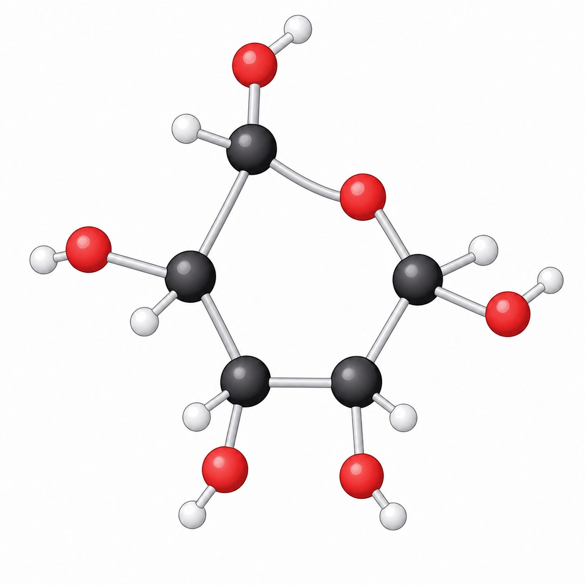
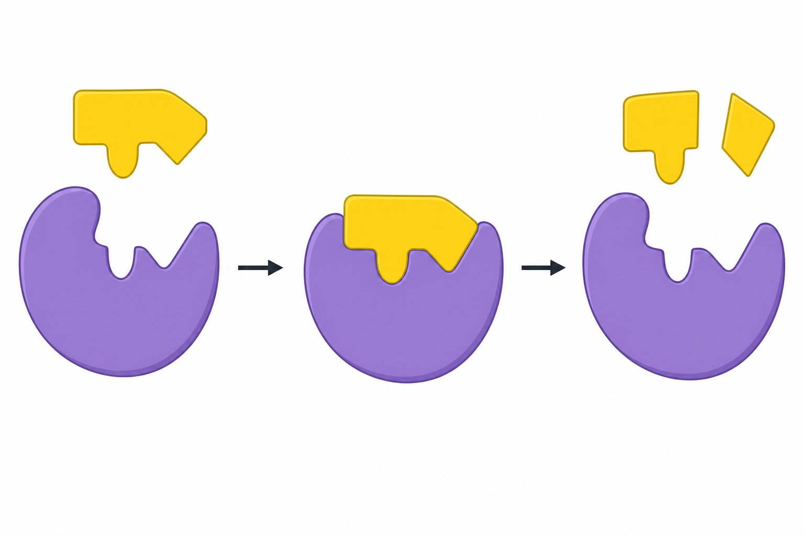

💧 A Água: O Solvente Universal da Vida
Pegue uma gota de água do mar e imagine as colisões invisíveis que acontecem ali dentro: trilhões de moléculas de H₂O se atraem e se afastam o tempo todo. Essa dança molecular é o que permite que a vida exista.
A água representa cerca de 70% da massa do corpo humano e é o solvente universal: quase todas as reações químicas dos seres vivos acontecem nela. Suas propriedades — alto calor específico, tensão superficial, coesão e adesão — garantem estabilidade térmica e transporte de substâncias.

🧂 Sais Minerais: Os Cozinheiros Invisíveis
Os sais minerais são íons que, mesmo em quantidades pequenas, participam de funções vitais: contração muscular, transmissão nervosa, coagulação e formação de ossos e hemoglobina.
| Íon | Função principal | Carência pode causar |
|---|---|---|
| Cálcio (Ca²⁺) | Ossos, dentes, coagulação e contração muscular | Osteoporose, tetania |
| Sódio (Na⁺) e Potássio (K⁺) | Transmissão do impulso nervoso e equilíbrio hídrico | Cãibras, alterações nervosas |
| Ferro (Fe²⁺) | Componente da hemoglobina (transporte de O₂) | Anemia ferropriva |
| Iodo (I⁻) | Produção dos hormônios da tireoide (T3 e T4) | Bócio |
| Magnésio (Mg²⁺) | Ativação de enzimas e fotossíntese (clorofila) | Fraqueza muscular |
| Fósforo (PO₄³⁻) | DNA, ATP e ossos | Fadiga, problemas ósseos |
🍞 Carboidratos: O Combustível da Vida
Quando você come um pão, seu corpo está recebendo a principal fonte de energia imediata: os carboidratos. Eles também têm função estrutural — a celulose forma a parede das células vegetais e a quitina forma o exoesqueleto dos artrópodes.
- Monossacarídeos — glicose (C₆H₁₂O₆), frutose e galactose. A glicose é o combustível das células.
- Dissacarídeos — sacarose (glicose + frutose), lactose (glicose + galactose), maltose (glicose + glicose).
- Polissacarídeos — amido (reserva vegetal), glicogênio (reserva animal — fígado e músculos), celulose (estrutura vegetal).

🥑 Lipídios: Reserva e Estrutura
Gorduras, óleos, ceras e esteroides formam o grupo dos lipídios. Eles são insolúveis em água e armazenam o dobro de energia por grama que os carboidratos.
Funções: reserva energética, isolamento térmico, proteção mecânica de órgãos e composição das membranas celulares (fosfolipídios e colesterol). Atenção: gorduras trans e saturadas em excesso elevam o risco cardiovascular.
🥩 Proteínas e Enzimas: As Máquinas da Célula
Proteínas são polímeros de aminoácidos unidos por ligações peptídicas. Elas são a matéria-prima de músculos, enzimas, anticorpos, hormônios e do transporte de oxigênio.
As enzimas são catalisadores biológicos: aceleram reações sem serem consumidas. Cada enzima tem um sítio ativo que só encaixa em seu substrato específico — o modelo "chave e fechadura". Fatores como temperatura e pH alteram sua atividade; valores extremos causam desnaturação (perda da forma e da função).
